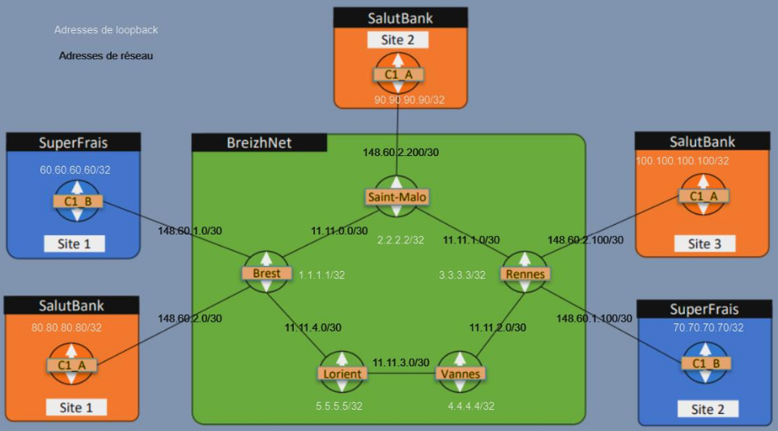

1. Academic Projects
These projects were carried out during my DUT to validate the acquisition of both technical and transversal skills. They combine hands-on implementation, written reports, and oral presentations.
These projects were carried out during my DUT to validate the acquisition of both technical and transversal skills. They combine hands-on implementation, written reports, and oral presentations.
The Development and Cloud track chosen in my second year allowed me to complete projects focused on virtualization and containerization.
Design and deployment of a local network including a firewall, DNS/AD server, web server, and multiple client machines. The project required virtualization, network security, and technical documentation skills.

Development of a microservice-based application (Docker) to manage and visualize project SBOMs. The goal was to design a modular, secure, and scalable architecture.

Creation of a showcase website and an intranet using PHP/HTML/CSS. The project included user management and security while emphasizing teamwork through GitHub.

Development of an Android application in Java with agenda and task tracking features. The focus was on user experience, software design, and documentation.

Design of a multi-site network integrating an operator and two clients. The project included implementing VPN tunnels, IPv6 evolution, and complete documentation.
Deployment of a full local network with DNS/AD server, firewall, and web server. This project applied virtualization and security principles in a simulated enterprise environment.

These projects were completed during my internships and apprenticeship. They allowed me to apply my knowledge in real-world settings, strengthen my technical skills, and gain hands-on professional experience.
Participation in the modernization of an industrial site's network: replacing switches, recabling, optimizing port distribution, and updating technical documentation.

I also configured an SD-WAN solution for multi-site routing, improving network resilience and flexibility.
As a Customer Solution Engineer in Network, Cloud, and Security, I contribute to the design, deployment, and support of infrastructures tailored to client needs. My responsibilities include configuring secure network solutions, implementing cloud architectures, and ensuring technical follow-up on strategic projects. This apprenticeship allows me to combine technical expertise with client relations.
Design by: HTML5 UP
{kind=link}